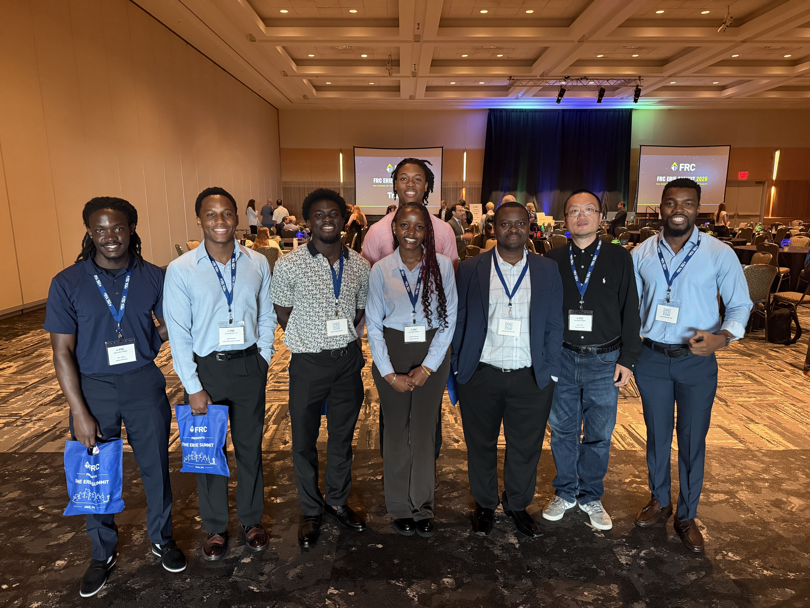

Earlier this summer, some Gannon Hacks Cyber Club members attended the FRC Erie Summit at the Bayfront Convention Center, alongside other Gannon students and faculty, including the club's patron, Dr. Ronny Bazan-Antequera. The summit brought together local industry, government, and academic voices for a day focused on where cybersecurity and organizational resilience are actually headed, not just where the headlines say they're headed.
AI, Zero Trust, and Resilience
The conversation centred on AI, Zero Trust, cyber resilience, and risk management. What stood out was how practical it stayed throughout the day. Rather than abstract threat forecasting or speculative "what if" scenarios, speakers kept coming back to what organizations can actually do right now: closing resilience gaps before they get exploited, modernizing legacy environments that were never built with today's threat landscape in mind, and using AI where it genuinely helps rather than where it just sounds impressive on a slide.
One thread that came up repeatedly was alert correlation, using AI to process alert volumes at a speed and scale no human analyst team can match, not to replace the analysts but to clear the noise so they can spend their time on what actually matters. It's a theme that's shown up at nearly every conference the club has attended this year, which says something about where the industry's attention is right now.

"What I took from this summit is that resilience isn't about predicting the next threat, it's about making sure your organization can absorb whatever comes and keep functioning." — Abraham Klogo, President, Gannon Hacks Cyber Club

A Local Summit With National-Level Conversations
For a club that's spent the year traveling to Rochester, Boston, and Charlottesville for conferences, there was something valuable about a summit happening right here in Erie. It meant a bigger group of members and faculty could attend without the logistics of a multi-state trip, and it reinforced that the same conversations happening at national conferences are also happening locally, among the organizations and institutions right around Gannon.
"It was refreshing to hear practitioners talk about closing gaps instead of just naming them, that's the part we don't always get to see as students." — Jeanalex Namuswe, Gannon Hacks Cyber Club
"Summits like this remind our students that resilience isn't built in a classroom, it's built by watching how real organizations respond when their assumptions get tested." — Dr. Ronny Bazan-Antequera, Patron, Gannon Hacks Cyber Club
Another reminder that the best learning often happens outside the classroom, in a room full of people actually doing the work.